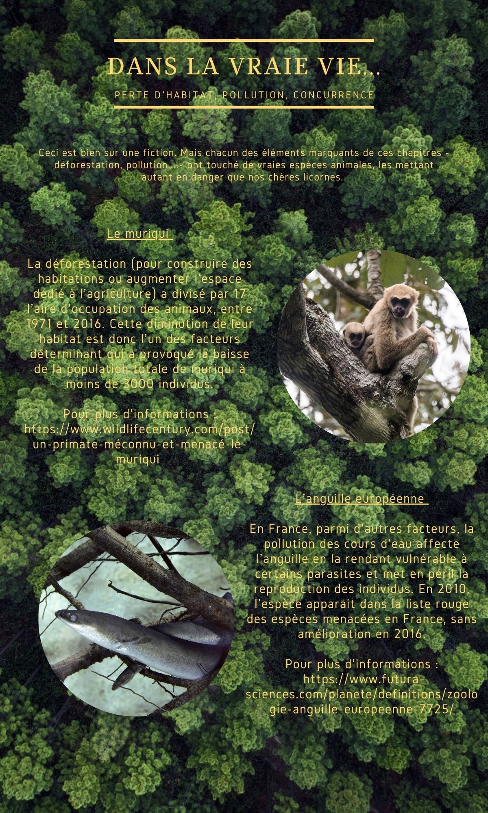
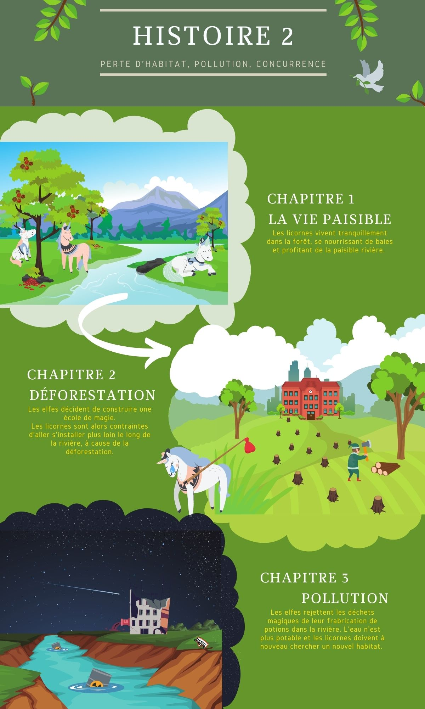
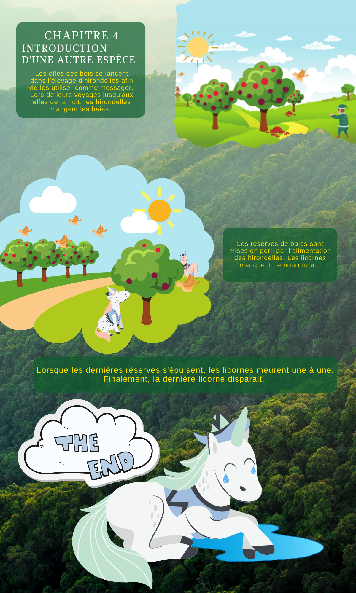

Histoire 2
Introduction
Histoire 1
Histoire 2

Faits réels associés
Histoire imaginaire


Voici quelques liens à suivre si vous désirez en apprendre plus sur ces espèces en danger. Par catégorie, ces espèces ont principalement été victimes...
...de la déforestation.
Le tigre
...de la pollution.
L'anguille européenne
...de l'introduction d'une autre espèce.
L'iguane terrestre de la Jamaïque,
le foudi de Maurice
le monarque de Fatu Hiva